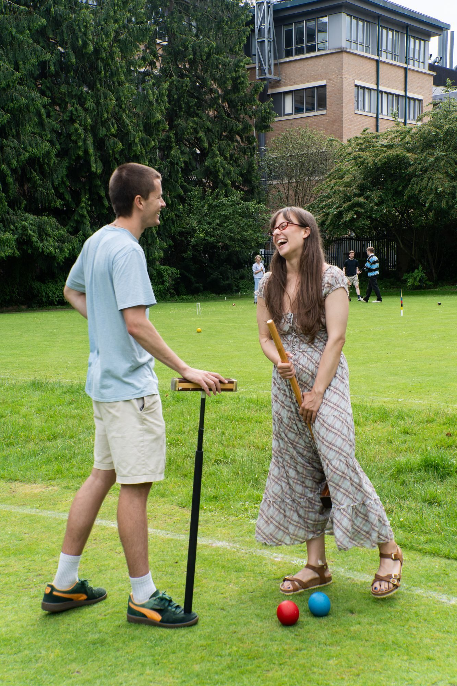

General Information
The Club uses the two full size courts in The University Parks. The courts open for play on the saturday of 0th Week Trinity term. There is currently no booking of the courts; they operate on a first-come basis. (If demand becomes heavy a booking system will be introduced.) No equipment may be borrowed, except for use in club matches.
The croquet club hut contains all the equipment required and all you need are flat-soled shoes to prevent damage to the courts. The hut is also stocked with coaching material and has a large notice board advertising events, equipment, etc.
All members should read the Croquet Byelaws .
Once you are accepted as a member you will receive your membership card, key if requested, and information about the season's activities in the club.
Members can use the courts at any time, except when there are matches or coaching taking place. (Tuesday & Thursdays, 5-6 p.m. weeks 1-4) - see the fixture calendar for further details. (Undergraduates are reminded that under university rules they may not play sport during the morning on weekdays.)
Membership Applications
The OUACC Membership Application Form is available to download from this site in, and in.
Please sent the completed form, together with a cheque for the appropriate amount (with a £5 deposit for a club-hut key, if required), payable to "Oxford University Association Croquet Club", to the OUACC Secretary, Mo.
The membership options available are described below. Note that to conform to university regulations the Membership and Court Use fees are shown separately, and members can apply for whichever combination is most appropriate to their circumstances.
Membership Options
There are three categories of membership available. Student membership of the club is subsidised by the University. Consequently, non-student membership is more expensive for other members of the University and for members of college staffs. However, even for these members, the rates are considerably lower than at other clubs.
| Category of Membership | Rate |
| Student | £1 |
| Oxford University member, non-student | £10 |
| Members of college staffs | £25 |
NON-UNIVERSITY MEMBERS
The Club welcomes experienced croquet players. This arises because the Club is unable to coach novices other than at the start of the season due to the migratory habits of students and academics in the summer vacation. The University also puts a restraint on the number of non-University members a club may contain. However, no distinction is made between players once they are members, and everyone is encouraged to participate fully in the Club. Please contact the OUACC Secretary, Mo, if you are interested in joining the Club.
Court Fees
In addition to membership fees, players wishing to use the University Courts must pay an additional court fee. You may choose to use the courts for Trinity Full Term only (normally the best option for Undergraduates) or for the entire season (normally the best option for Postgraduates, Senior Members, or Non-University members).
| Court Use | Rate |
| Trinity Full Term only (8 weeks) | £8 |
| Full season (April - Sept) | £17 |
Typical combinations of Membership and Court Use
The following table shows the most common combinations of Membership and Court use fees. Remember to add £5 to the total if you require a key to the club hut!
| Status | Membership | Court Use | Total |
| Undergraduate student | Student | Term-time only (8 weeks) | £9 |
| Graduate student | Student | Full season | £18 |
| Oxford University member, non-student | OU, non-student | Full season | £27 |
| Non-university member | Non-university | Full season | £42 |
FURTHER INFORMATION
If you would like any further information please get in touch with a member of the committee .